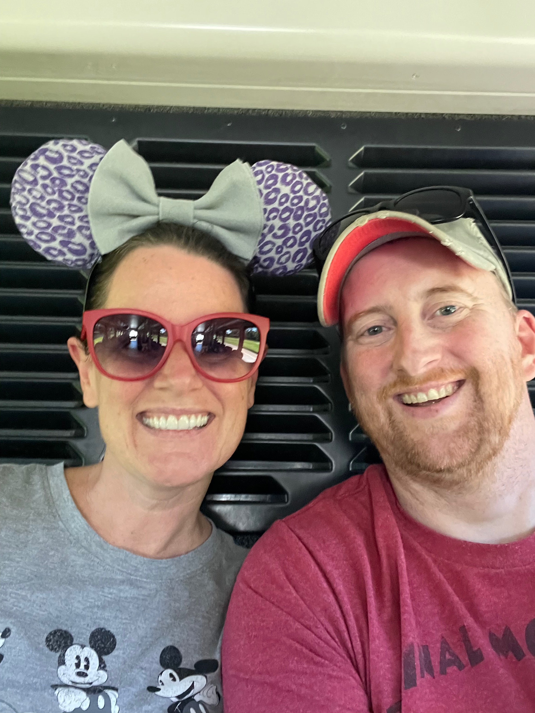
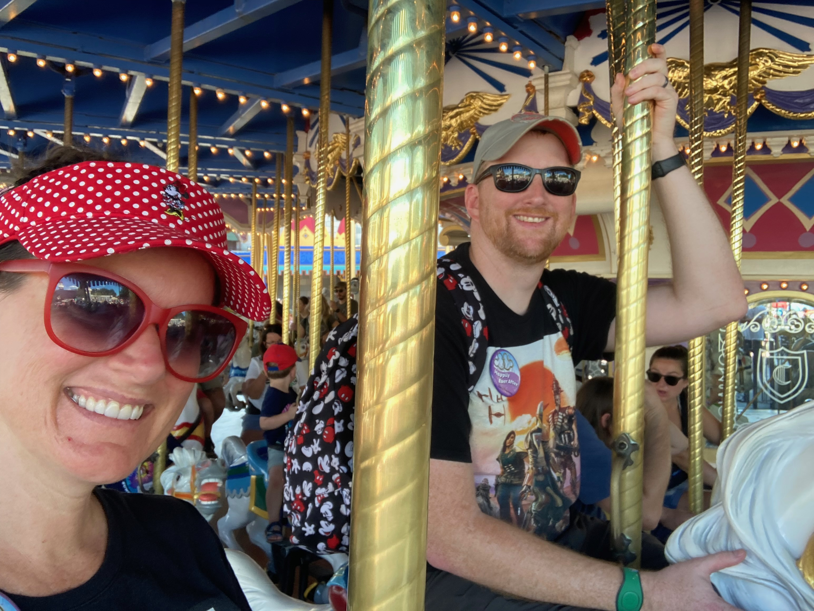

In October 2022, I went to Florida for the first time.
I got to got to Disney World for the first time!
I grew up in California, not too far from Disneyland.
I always loved Disneyland, and I can't remember the first time I went.
I was in high school when I first went to Disney California Adventure.

Animal Kingdom
Animal Kingdom is in Orlando, Florida, and it can be accessed by shuttle bus from the Disney hotels.
It is the first park I ever went to at Disney World.
My favorite ride was the Kilimanjaro Safari.
My second favorite ride was Pandora Flight of Passage.
The photo above was taken on the bus to Animal Kingdom for my very first visit!
Epcot
Epcot is also in Orlando, Florida, and it can be accessed by the SkyLiner.
It is the second park I went to at Disney World.
My favorite ride of all time is in Epcot: Guardians of the Galaxy!
Seriously, that is the best ride ever, and you have to try it.

Magic Kingdom
Magic Kingdom is another park in Orlando, Florida, and it can be accessed by shuttle bus.
It is the third park I went to at Disney World.
My favorite rides are the Haunted Mansion, the Jungle Cruise, and the Carousel of Progress.
This park reminded me the most of Disneyland.
However, Magic Kingdom has a restaurant inside the castle, and I got to eat there and take a photo with Cinderella!
My aunt Allie joined us too.
Hollywoord Studios
Hollywood Studios is the fourth and final park of Disney World in Orlando, Florida.
It can be accessed by the SkyLiner from select Disney hotels.
My favorite part of Hollywood Studios was the Star Wars land, where we got to hang out in the Cantina!
The Rise of the Resistance was my favorite ride.
The Millenium Falcon: Smugglers' Run was my second favorite ride.
Disney California Adventure
Disney California Adventure is in Anaheim, California.
I always drive there because my parents live about 35 minutes away.
My favorite ride is Radiator Springs Racers.
My second favorite ride is Ariel's Undersea Adventure.
Disneyland
Disneyland is one of my favorite places in the whole world!
I like to go there whenenever I visit my parents in California.
My favorite ride is Indiana Jones.
My second favorite ride is Davy Crockett's Explorer Canoes.
My favorite food is the gumbo in New Orleans Square.

Thanks for reading about my favorite Disney Parks!
Fun fact: On opening day, a child ticket to Disneyland cost only 50¢